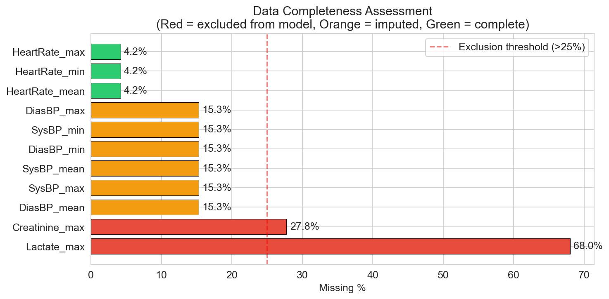
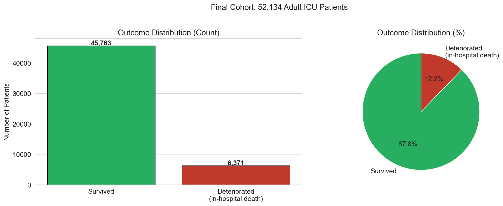
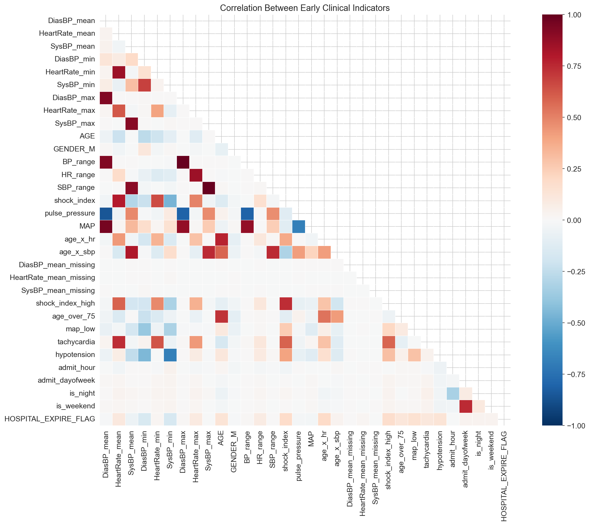
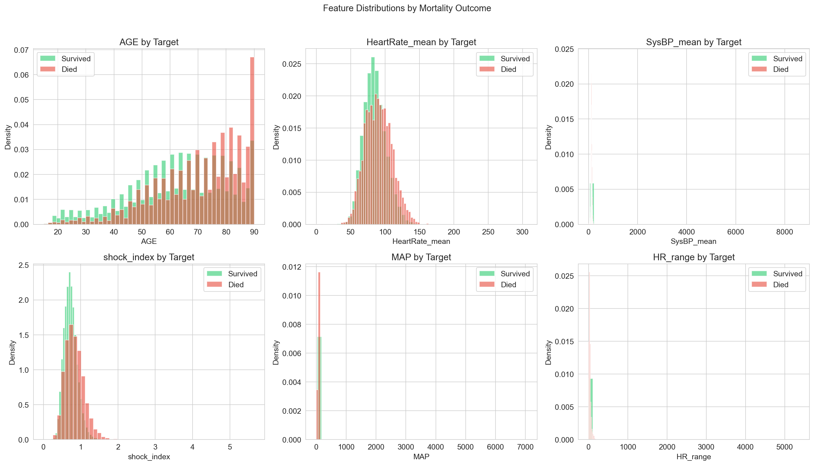
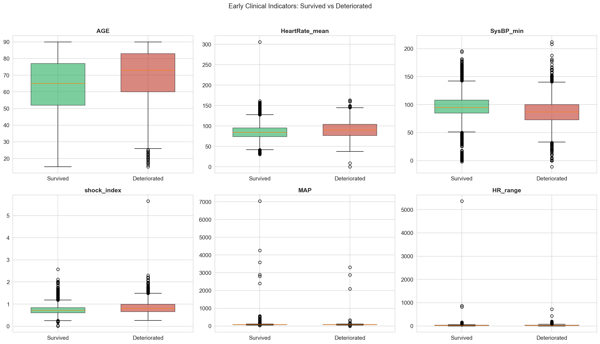

Dataset
COMPLETE_ICU_RISK_DATASET.csv — a MIMIC-derived ICU
cohort. Each row is one ICU stay, with vitals aggregated over the
early monitoring window, admission context, optional lab draws, and a
deterioration/mortality outcome label.
| Field | Type | Description |
|---|---|---|
| age | number | Patient age in years |
| gender | M / F | Patient sex |
| heart_rate_mean / min / max | bpm | Heart rate over the monitoring window |
| systolic_bp_mean / min / max | mmHg | Systolic blood pressure |
| diastolic_bp_mean / min / max | mmHg | Diastolic blood pressure |
| admit_hour, admit_dayofweek | int | Time-of-admission context |
| lactate_max | mmol/L (optional) | Peak lactate, if drawn — strong sepsis/shock signal |
| creatinine_max | mg/dL (optional) | Peak creatinine, if drawn — renal function signal |
Full raw file: download from Downloads.
Data quality
Labs are the main source of missingness — not every patient has an early lactate or creatinine draw. Physiologically impossible sensor values (e.g. blood pressure readings in the hundreds of thousands) were treated as invalid and replaced before imputation.


Feature relationships



What the EDA motivated
- Class imbalance → macro-F1, sensitivity, and a tuned decision threshold instead of raw accuracy (see Methodology).
- Frequent missing labs → explicit
*_missingindicator flags plus cohort-median imputation, rather than dropping rows. - Correlated vitals (e.g. BP min/mean/max) → derived ratio/range features (shock index, pulse pressure, MAP, BP range) that compress redundant signal into a single informative value.